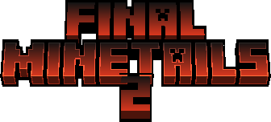

Final Minetails 2 é um mod para Luanti (Minetest) que coloca os mascotes do Linux no jogo como nextbots: eles aparecem e vêm atrás de você.
Baixar Final Minetails 2Mascotes
Cada mascote usa um modelo 3D próprio.
- Tux
- Konqi, Katie e Kori
- Rust
- Go
Outros mascotes podem ser adicionados depois.
Comandos
/bot ftails paranoia | Toca uma música. |
/bot paranoia stop | Para a música. |
Como instalar
- Baixe o
.zippelo botão acima. - Extraia a pasta do mod dentro de
mods/do Luanti. - Abra seu mundo em Configurar e ative o mod.
- Entre no mundo.